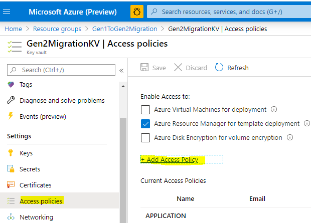
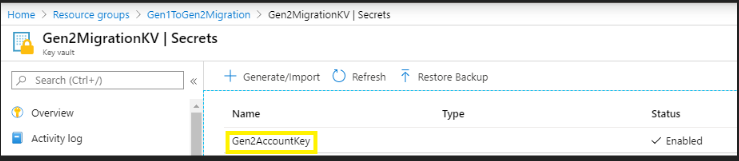
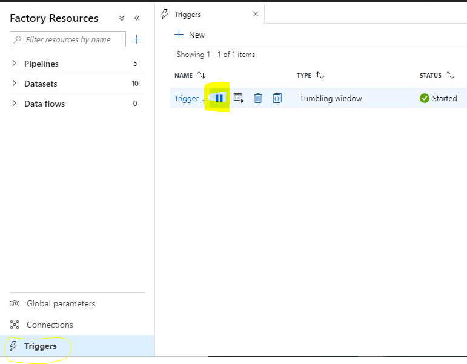
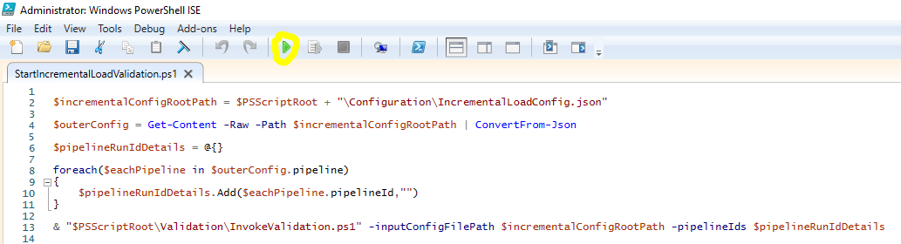
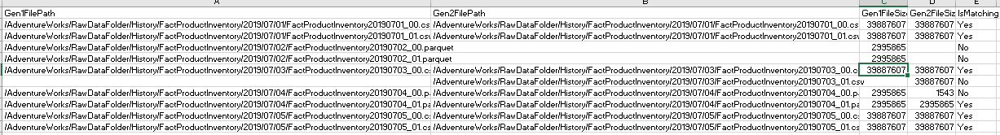

Incremental Copy Pattern Guide: A quick start template #
Overview #
The purpose of this document is to provide a manual for the Incremental copy pattern from Azure Data Lake Storage 1 (Gen1) to Azure Data Lake Storage 2 (Gen2) using Azure Data Factory and PowerShell. As such it provides the directions, references, sample code examples of the PowerShell functions been used. It is intended to be used in form of steps to follow to implement the solution from local machine. This guide covers the following tasks:
- Set up kit for Incremental copy pattern from Gen1 to Gen2
- Data Validation between Gen1 and Gen2 post migration
Prerequisites #
-
Active Azure Subscription
-
Azure Data Lake Storage Gen1
-
Azure Data Lake Storage Gen2
For more details please refer to create azure storage account
-
Azure Key Vault
Required keys and secrets to be configured here.
-
Service principal with read, write and execute permission to the resource group, key vault, data lake store Gen1 and data lake store Gen2.
To learn more, see create service principal account and to provide SPN access to Gen1 refer to SPN access to Gen1
-
Windows PowerShell ISE
Note: Run as administrator
// Run below code to enable running PS files Set-ExecutionPolicy Unrestricted // Check for the below modules in PowerShell . If not existing, install one by one: Install-Module Az.Accounts -AllowClobber -Force Install-Module Az.DataFactory -AllowClobber -Force Install-Module Az.KeyVault -AllowClobber -Force Install-Module Az.DataLakeStore -AllowClobber -Force Install-Module PowerShellGet –Repository PSGallery –Force // Close the PowerShell ISE and Reopen as administrator. Run the below module Install-Module az.storage -RequiredVersion 1.13.3-preview -Repository PSGallery -AllowClobber -AllowPrerelease -Force
Limitations #
This version of code will have below limitations:
- Gen1 & Gen2 should be in same subscription
- Supports only for single Gen1 source and Gen2 destination
- Trigger event is manual process for incremental copy
- Code Developed and Supported only in Windows PowerShell ISE
Migration Framework Setup #
-
Download the migration source code here to local machine:
Note: To avoid security warning error –> Right click on the zip folder downloaded –> Go to –> Properties –> General –> Check unblock option under security section. Unzip and extract the folder.
The folder will contain:
-
Configuration: This folder will have the configuration file
IncrementalLoadConfig.jsonand all the details of resource group and subscription along with source and destination path of ADLS Gen1 and Gen2. -
Migration: Contains the json files, templates to create dynamic data factory pipeline and copy the data from Gen1 to Gen2.
-
Validation: Contains the PowerShell scripts which will read the Gen1 and Gen2 data and validate it post migration to generate post migration report.
-
StartIncrementalLoadMigration.ps1: Script to invoke the migration activity by creating increment pipeline in the data factory.
-
StartIncrementalLoadValidation.ps1: Script to invoke the Validation process to compare the data between Gen1 and Gen2 post migration and generate summary report.
Note: The
StartFullLoadMigrationAndValidation.ps1] script is to migrate the full data load from Gen1 to Gen2. -
-
Set up the Configuration file to connect to azure data factory:
Important Prerequisite:
- Provide Service principal access to configure keyvault as below:

- Make an entry of Gen2 connection string in the key vault as shown below :

// Below is the code snapshot for setting the configuration file // to connect to azure data factory: "gen1SourceRootPath" : "https://<<Enter the Gen1 source root path>>.azuredatalakestore.net/webhdfs/v1", "gen2DestinationRootPath" : "https://<<Enter the Gen2 destination root path>>.dfs.core.windows.net", "tenantId" : "<<Enter the tenantId>>", "subscriptionId" : "<<Enter the subscriptionId>>", "servicePrincipleId" : "<<Enter the servicePrincipleId>>", "servicePrincipleSecret" : "<<Enter the servicePrincipleSecret Key>>", "keyVaultName" : "<<Enter the keyVaultName>>", "factoryName" : "<<Enter the factoryName>>", "resourceGroupName" : "<<Enter the resourceGroupName under which the azure data factory pipeline will be created>>", "location" : "<<Enter the location>>", "overwrite" : "Enter the value" // True = It will overwrite the existing data factory ,False = It will skip creating data factory -
Scheduling the factory pipeline for incremental copy pattern
"pipelineId" : "Enter distinct pipeline id eg 1,2,3,..40", "isChurningOrIsIncremental" : "true", "triggerFrequency" : "Provide the frequency in Minute or Hour", "triggerInterval" : "Enter the time interval for scheduling (Minimum trigger interval time = 15 minute)", "triggerUTCStartTime" : "Enter UTC time to start the factory for Incremental copy pattern .Eg 2020-04-09T18:00:00Z", "triggerUTCEndTime" : "Enter the UTC time to end the factory for Incremental copy pattern. Eg 2020-04-10T13:00:00Z", "pipelineDetails":[ // Activity 1 // "sourcePath" : "Enter the Gen1 full path. Eg: /path-name", "destinationPath" : "Enter the Gen2 full path.Eg: path-name", "destinationContainer" : "Enter the Gen2 container name" // Activity 2 // "sourcePath" : "Enter the Gen1 full path. Eg: /path-name", "destinationPath" : "Enter the Gen2 full path.Eg: path-name", "destinationContainer" : "Enter the Gen2 container name" // Note : Maximum activities per pipeline is 40Note: Please note the destinationPath string will not be having Gen2 container name. It will have the file path same as Gen1. Review the
Configuration/IncrementalLoadConfig.jsonscript for more reference. -
Azure data factory pipeline creation and execution
Run the script
StartIncrementalLoadMigration.ps1to start the incremental copy process.
-
Azure Data factory pipeline monitoring
The pipeline will be created in Azure data factory and can be monitored in below way:

Data Validation #
This step will validate the Gen1 and Gen2 data based on file path and file size.
Data Validation Prerequisites #
No Incremental copy should be happening before running the validation script.
Stop the trigger in the azure data factory as below:

Run the script StartIncrementalLoadValidation.ps1 in PowerShell.

Note: This script should be run only after the azure data factory pipeline run is complete (run status = succeeded).
Data Comparison Report #
Once the Gen1 and Gen2 data is compared and validated, the result is generated in CSV file into the Output folder as below:

The CSV file will show the matched and unmatched records with Gen1 and Gen2 file path, Gen1 and Gen2 file size and Ismatching status.

Note: IsMatching status = Yes (For matched records ) and No (Unmatched records)
Application update #
This step will configure the path in the work loads and applications to Gen2 endpoint.
Please refer to Application and Workload Update